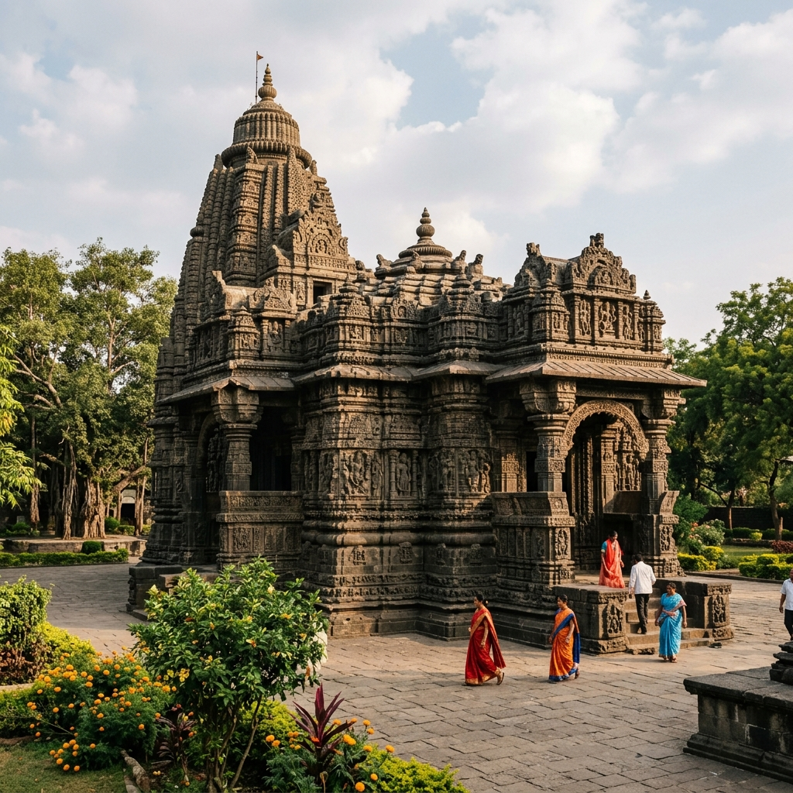
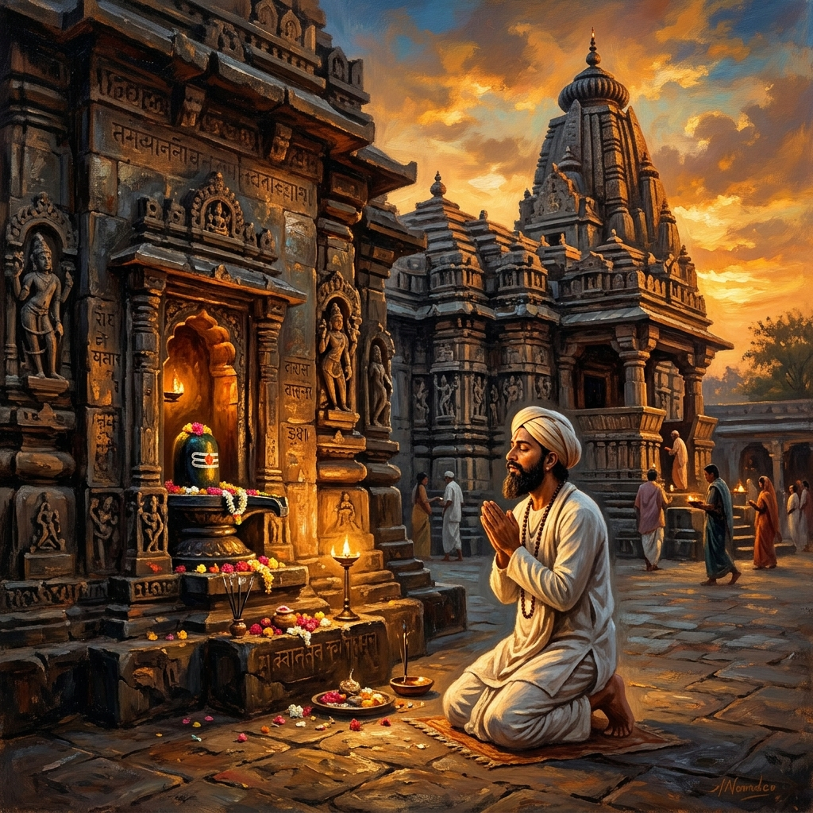
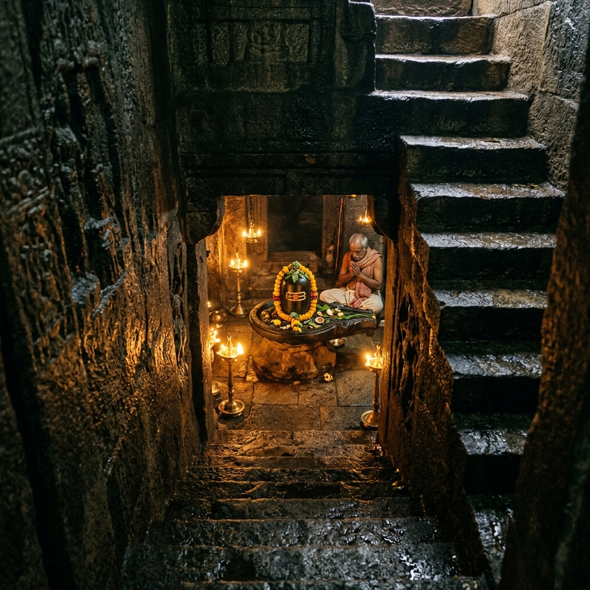
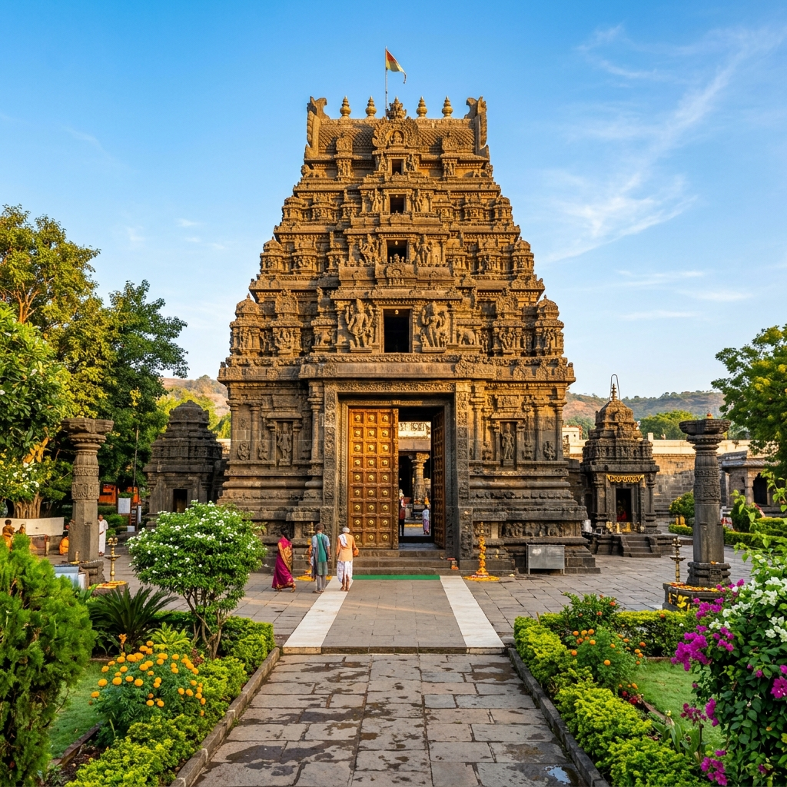

About Temple
If you are looking for a place that gives you more than just a quick temple visit, Aundha Nagnath Temple is worth experiencing. The atmosphere here is calm and grounded, far away from the noise and rush of city life. As soon as you reach, you’ll notice how simple and peaceful everything feels – open surroundings, less crowd, and a sense of quiet that helps you slow down. It’s the kind of place where you don’t feel like rushing through darshan; instead, you feel like sitting for a while and just being present.
Calm Atmosphere
Grounded & Peaceful
Quiet Devotion
Slowing Down

History & Significance

The temple is believed to date back to the time of the Mahabharata, with stories saying that it was originally built by the Pandavas during their exile. Over time, it was expanded and preserved by the Yadava dynasty and later restored by Ahilyabai Holkar, who played a major role in maintaining many important temples across India. One of the most well-known legends associated with this temple is of Saint Namdev, where it is believed that the temple itself turned in his direction when he was not allowed entry, symbolizing that devotion matters more than tradition or rules.
Pandavas Link
Mahabharata Origin
Saint Namdev
Faith Over Rules
What Makes It Unique
Discover the unique factors that set Aundha Nagnath Temple apart from other shrines.


Travel Guide
Convenient ways to reach the temple from major hubs in Maharashtra.
Option 1: Rail & Road Transit
Aundha Nagnath is located about 25–30 km from Hingoli and around 70 km from Nanded. Taxis, state buses, and auto-rickshaws are readily available from both railway stations.
Distance: 25 km from HingoliOption 2: Direct Drive
From Mumbai (~540 km) or Pune (~420 km), you can drive via Aurangabad and Hingoli. The roads offer a scenic journey across Maharashtra's heritage routes.
Aurangabad-Hingoli RouteOption 3: regular Buses
State transport (MSRTC) and private luxury sleeper buses operate regular daily services connecting Hingoli, Nanded, Aurangabad, and Pune to Aundha.
Essential Information
Important details regarding timings, queues, and ideal visiting slots.
Timings & Crowds
Opens at 4:00 AM to 12:00 PM, and reopens from 4:00 PM to 9:00 PM. Early morning is the best time for a quiet, crowd-free darshan.
Entry & Darshan
General entry is free. Special pooja or rituals managed by the trust may have distinct charges depending on the offerings chosen.
Best Time to Visit
October to March offers pleasant weather. Monsoons are scenic with lush green settings, while summers are dry and warm.
Location & Coordinates
Aundha town, Hingoli district, Maharashtra, India